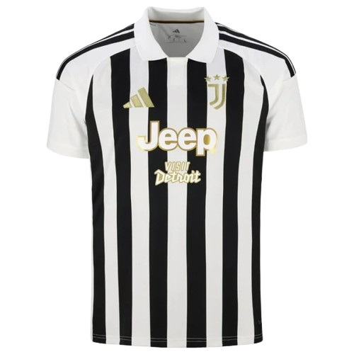
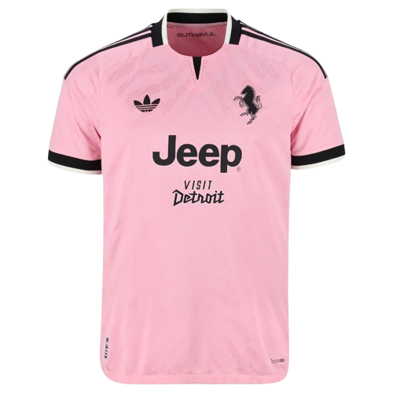
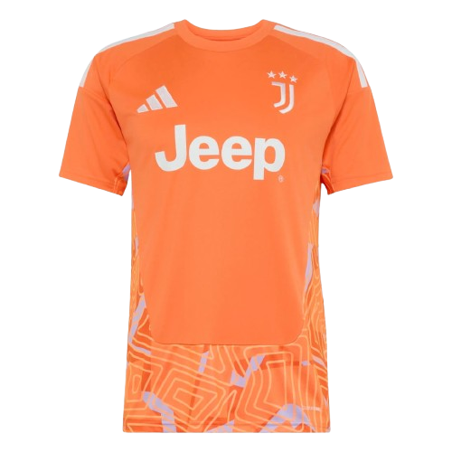

Per la stagione 2026-2027, la Juventus FC presenta le nuove maglie in collaborazione con Adidas. La maglia home mantiene il classico stile bianconero del club, la maglia away si distingue per un elegante colore rosa, mentre la third propone un design originale e moderno. Progettate per unire stile, comfort e prestazioni, queste maglie permettono ai giocatori di brillare in campo e ai tifosi di indossare con orgoglio i colori della Juventus.


